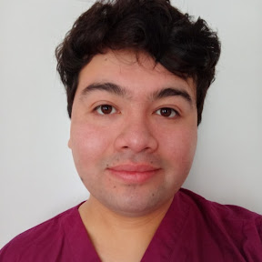

Alan Correa

Contacto y Portafolio
Presentación
Tecnólogo Médico mención Oftalmología, egresado en 2021. Actualmente estudiante FullStack JavaScript en bootcamp Desafio Latam y de forma autodidacta. Me desempeño principalmente en refracción clínica a pacientes de todas edades, aplicando conocimientos prácticos actualizados, una atención empática y amable, priorizando el trato digno. Tengo ansias de poder poner en práctica lo aprendido en el desarrollo de proyectos como FullStack, con un gran sentido del trabajo en equipo, organización y ética.
Formación Académica
- FullStack JavaScript - DesafioLatam 2024
- Magister Ed. Universitaria - Universidad San Sebastián 2022-2024
- Tecnología Médica Oftalmología y Optometría
Experiencia Laboral
- Nov 2023 - Actualidad. Refracción Clínica. Independiente.
- Examen Optométrico desde 5 años de edad
- Refracción Bajo Cicloplejia
- Certificados licencia de conducción
- Jun 2023 - Nov 2023. Examenes Oftalmológicos. Clinica KYDOFT
- Exámenes Glaucoma
- Exámenes Retina
- Exámenes Cirugías Catarata- Refractiva
- Oct 2021 - Jun 2023. Examenes Oftalmológicos. Servicio de Salud Araucanía Sur.
- Exámenes Refracción
- Exámenes Retina
- Exámenes Glaucoma
Habilidades
- Oftalmología y Optometría
- Trabajo en equipo
- Resolutividad en Salud y conflictos
- Elementos de protección Personal
- IAAS